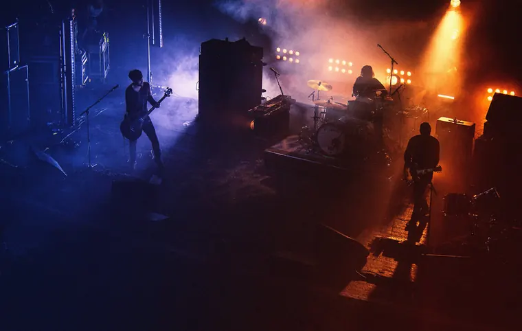

Unlock Your Musical Potential with Eclipwze Sounds

Are you looking to unlock your musical potential and take your passion for music to the next level? Eclipwze Sounds is a dynamic music band dedicated to creating meaningful collaborations with music enthusiasts like you.
Are you a rising artist? Or perhaps an aspiring artist with skills to share and a strong connection to music? Worry not — we’ve got you covered. Before we begin, get to know us through our About Us section or our Our Story blog.
Why collaborate with us?
If you’re a talented or aspiring singer or musician looking to develop your skills and build a reputation through collaboration, Eclipwze Sounds could be a great place to start. We’ve worked with videographers and vocalists to create music videos and songs, and we’re present on all major music streaming platforms. We gratefully welcome fresh music ideas, collaborations, and other ways of contributing.
The reason to join us is simple: you get to experience how tricky, interesting, and rewarding recording music can be, with the chance to feature on leading streaming platforms. Collaborating early in your journey can deepen your understanding of music and help you connect with other musicians.
Eligibility criteria
We understand that collaborating with other musicians can feel tricky. At Eclipwze Sounds, we take pride in being here 24/7 to help newcomers and first-timers find their feet. Here’s what we look for:
- A love for music, a strong connection to it, or a musical background.
- Musicians and vocalists are welcome.
- Something to contribute, with skills to bring to the table.
- A minimum of two years’ experience as a musician or vocalist, depending on the genre — Western or classical.
- The experience requirement may be overlooked if you have sufficient skills and musical knowledge.
How to collaborate
Please note that these collaborations do not involve a monetary payment. Depending on your skills and contribution — whether through an instrument you play or a video you record — you will be rewarded accordingly. We want those rewards to be exciting enough that you won’t want to miss out.
Use our Google Form to pitch an idea or send a collaboration request. Include a brief description of what you can offer. Our team will respond within 48 working hours, and relevant requests will receive further updates.